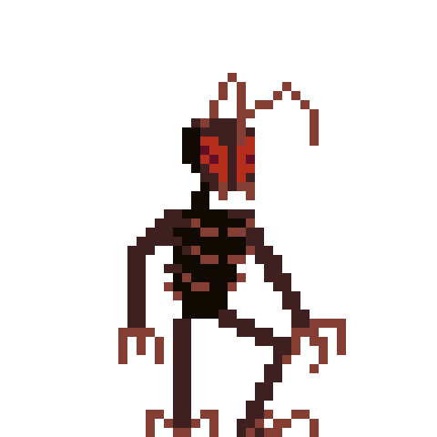

Un jeu de Jacket On The Loose
Une terreur est sur le point d'arriver au sein du 3ème système.
Son nom, le STAR GUN. Mais rien n'est perdu.
Un robot ouvrier peut encore nous sauver.


Parcourez le 3ème système et tentez de déjouer le chantier maléfique du STAR GUN. Attention, les Insectimoprhs sont coriaces et ne vous laisseront pas faire. Des réflexions et des difficultés vous attendent, mais ne baissez pas les bras.

Jeu disponible en alpha !

À propos
Je ne suis pas développeur, à la base, et je n'ai pas l'intention de le devenir.
J'essaye, avec ce jeu, d'explorer le côté artistique trop souvent négligé du jeu vidéo.
Je n'ai pas fait un jeu pour le divertissement, mais un jeu qui pousse à une réflexion
sur le medium, son impact, ses possibilités. J'ai su m'entourer de personnes qui m'aideront
à tenir ce projet à bout. C'est pourquoi, vous, en tant que joueur, j'attends une implication
et des retours durant le développement. Vous pourrez alors compléter ce
questionnaire
après votre expérience de jeu. Il y aura des mises à jour fréquentes, alors soyez au rendez-vous.